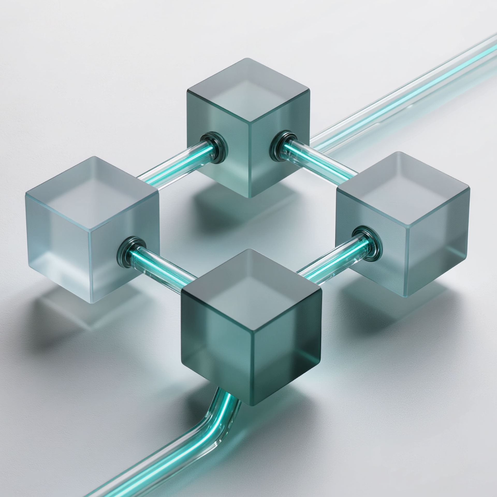

Escale su operación sin aumentar su nómina
Automatizamos procesos complejos mediante agentes de inteligencia artificial soberanos. Menos fricción, más margen.
El Costo de la Ineficiencia
Por qué las empresas están adoptando agentes IA.
Problema
Crecimiento lineal atado a contrataciones operativas. Procesos manuales que generan cuellos de botella y aumentan el riesgo de error humano.
Fricción
Sistemas heredados desconectados. Equipos de alto valor perdiendo tiempo en tareas repetitivas de bajo impacto estratégico.
Solución VISION
Implementación de agentes autónomos que orquestan flujos de trabajo completos 24/7, integrándose con su infraestructura existente.
Arquitectura Robusta
Construimos sobre LLMs de vanguardia, ajustados a su contexto empresarial para garantizar respuestas precisas y ejecución de tareas sin alucinaciones.
Control de Datos
Su información nunca entrena modelos públicos. Infraestructura dedicada (On-Premise o VPC) que cumple con los más altos estándares de cumplimiento.
Retorno Medible
Métricas claras de adopción y eficiencia. Reducción drástica en tiempos de resolución y costos operativos desde el primer trimestre.
Siri Corporativo
Interfaces conversacionales sobre sus bases de conocimiento internas. Búsqueda semántica instantánea para toda su organización.
Inteligencia de Datos Operativos
Centralizamos y estructuramos la información cruda de su ecosistema. Utilizamos IA para identificar patrones de comportamiento, medir el rendimiento de sus embudos en tiempo real y fundamentar sus decisiones con precisión métrica.
Automatización End-to-End
De la recepción del correo a la facturación final. Agentes que operan ERPs y CRMs sin intervención humana.

Arquitectura Cloud y Soberanía
Despliegues en entornos robustos y escalables (AWS, Coolify). Usted mantiene el control absoluto de sus datos e infraestructura, garantizando operaciones 24/7 sin depender de ecosistemas cerrados ni cajas negras.